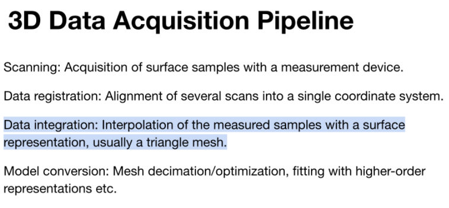
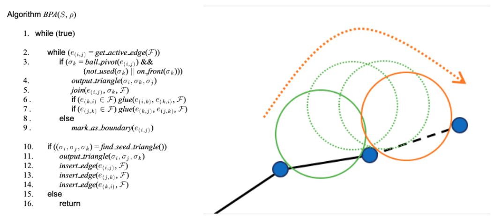
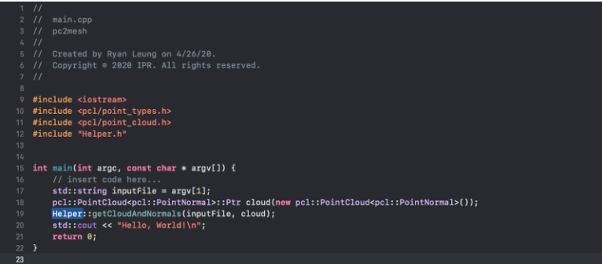
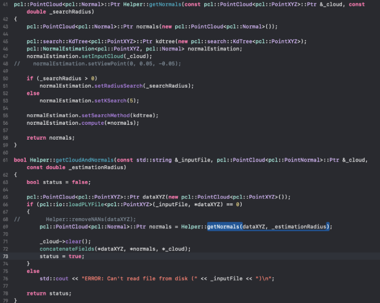

Our original proposal was to output 3D renderings from 360-degree mp4 files taken on smartphones, but we quickly realized that this was too ambitious. We've narrowed our focus to the data integration phase of the 3D data acquisition pipeline, and we will implement the ball-pivoting algorithm.
First, we read The Ball-Pivoting Algorithm for Surface Reconstruction (https://lidarwidgets.com/samples/bpa_tvcg.pdf). Then, we tried out the Point Cloud Library (http://pointclouds.org/) for computing point normals for a point cloud. However, because this wasn’t the main objective for the project and we ran into errors with this computation, we decided to look for point cloud files that already have point normals calculated.
  Next, we plan on implementing the data structures and functions used to run the ball-pivoting algorithm that we outlined in the slides.